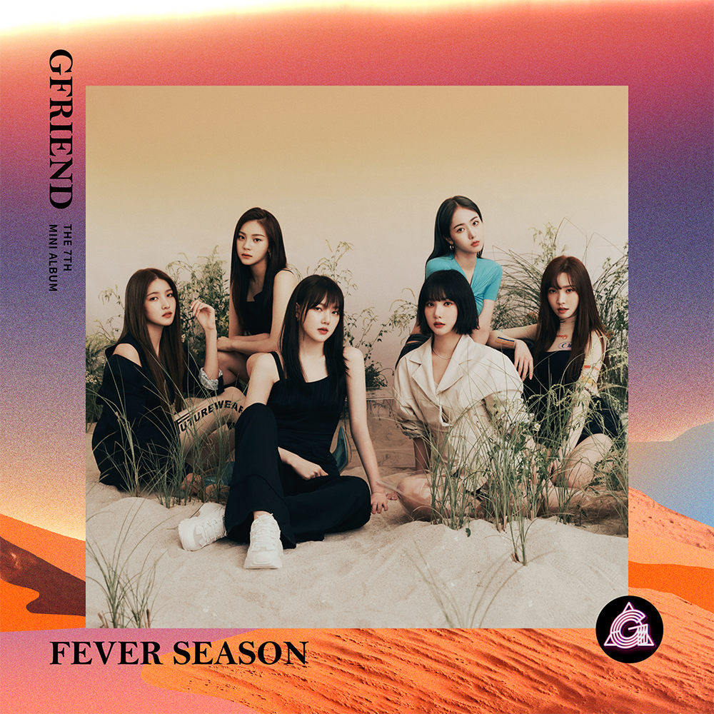
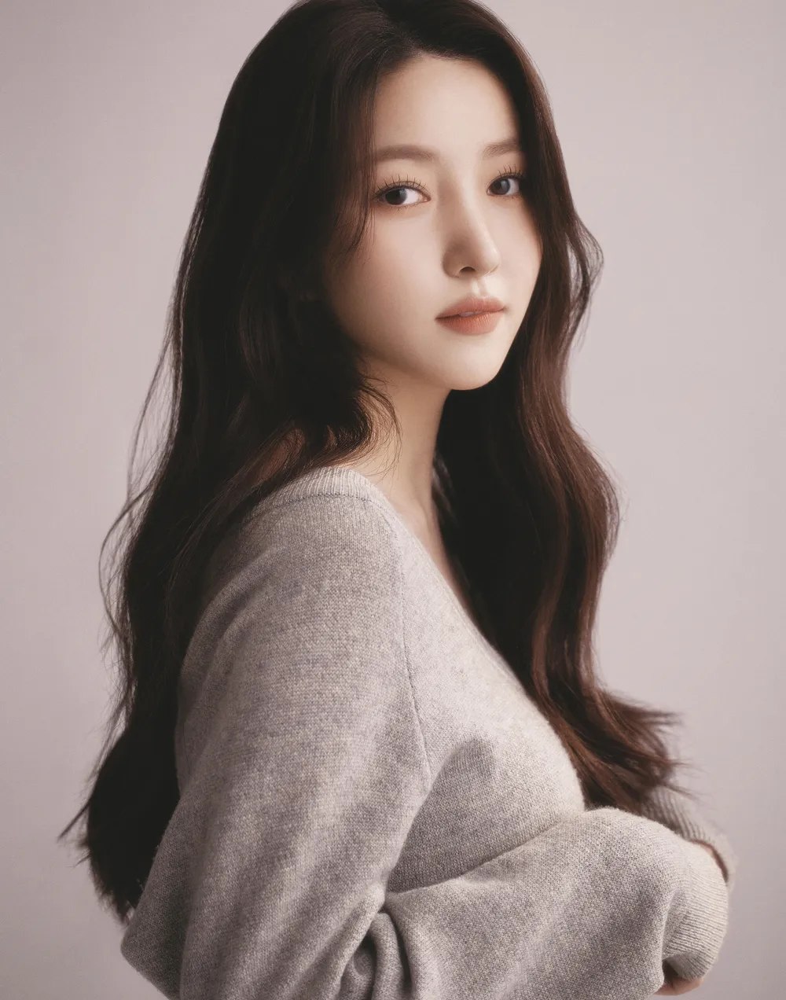
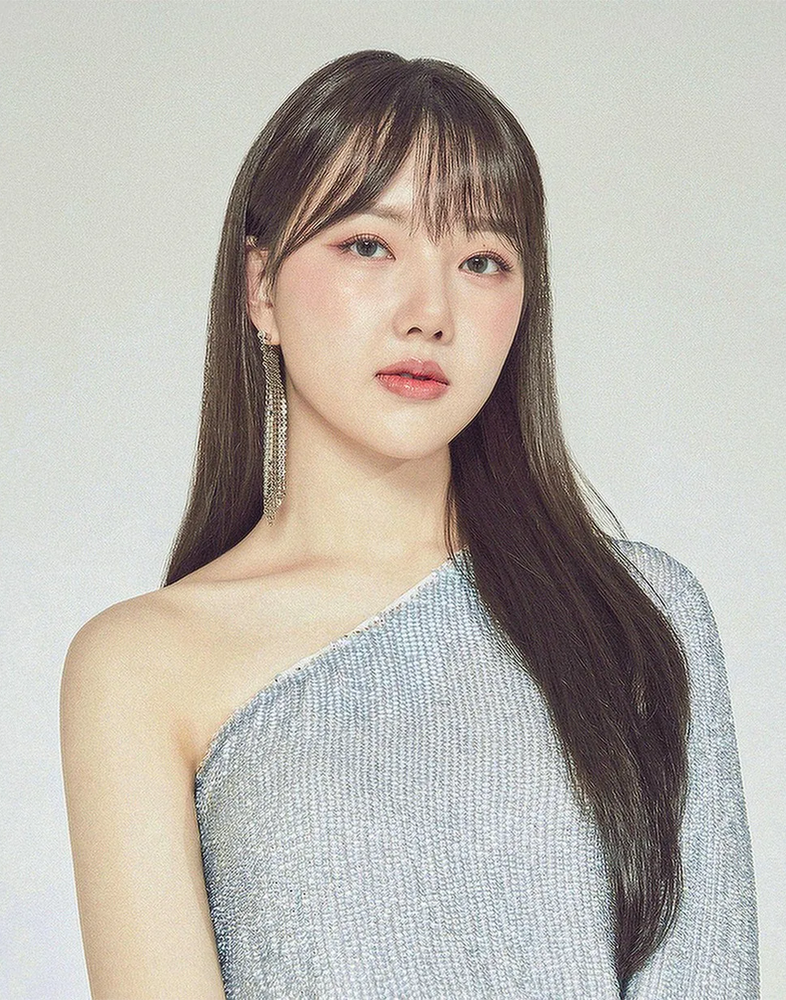
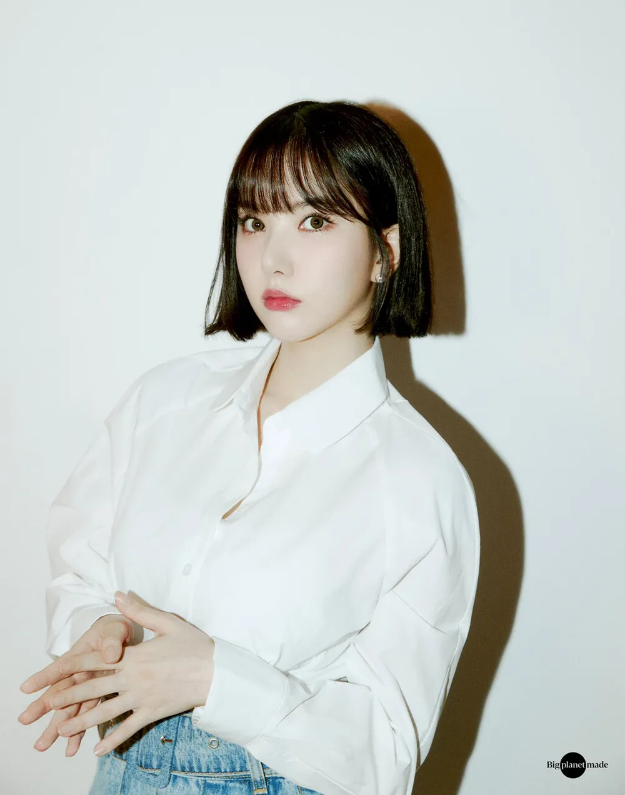
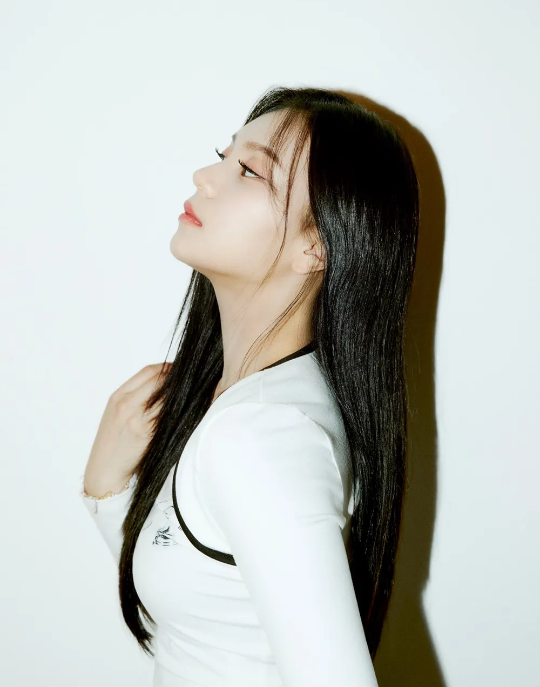

안녕하세요 라보엠입니다.
이런 여름밤에 생각나는 노래 아이돌 그룹 여자친구의 열대야를 소개해드리겠습니다. 벌써 5년전의 노래네요. 러블리즈도 그렇고 이렇게 좋은 곡들을 발표하던 그룹이 해체하는지 아직도 잘 이해가 잘 안갑니다. ㅠㅠ

여자친구 열대야 MV
여자친구 열대야 노래 가사
지금 이 순간 후회 없이 보여주고 싶어
그저 네 심장을 뛰게 하고 싶어
눈부신 달빛 아래 열대야 같은 사랑을 하고 있어
너와 나
불이 켜지는 순간이야 아직 아련한 메아리야
꿈을 꾸는 듯한 aria na na na na
어쩔 줄 모르던 나야
불확실한 것에 겁이 나
기다리진 않을 거야
코끝이 찡하니 들뜨는 이 밤
소리 없이 피어난 멋진 계절 같아 oh yeah
높아져 가는 낮과 밤의 온도
너무나 뜨거워 터질 것만 같아
지금 이 순간 후회 없이 보여주고 싶어
그저 네 심장을 뛰게 하고 싶어
눈부신 달빛 아래 열대야 같은 사랑을 하고 있어
너와 나
아직도 깊어져만 가는 열대야
여전히 사라지지 않는 열대야
차가운 어둠 지난 저 불꽃처럼
남김없이 사랑하는
너와 나
널 느낄 수 있어 언제나 찾을 수 있어
조금씩 선명해져 가
행복한 이 느낌 여름밤 꿈처럼
너를 만난 후로 퍼져가 새로운 나 oh yeah
작은 세상에 큰 꽃을 피워
날 사랑하는 법을 알 것만 같아
지금 이 순간 후회 없이 보여주고 싶어
그저 네 심장을 뛰게 하고 싶어
눈부신 달빛 아래 열대야 같은 사랑을 하고 있어
너와 나
Hot summer night
새벽이 온대도 네 두 눈 속에서
아무 말 안 해도 날 느낄 수 있어
커져가 커져가 이 불씨에
사르르 사르르 녹아내려도
널 안아줄 거야
영원할 거야 이대로
아직도 깊어져만 가는 열대야
여전히 사라지지 않는 열대야
차가운 어둠 지난 저 불꽃처럼
남김없이 사랑하는
너와 나
여자친구는 어떤 그룹인가요?
- 멤버 : 소원, 예린, 은하, 유주, 신비, 엄지
   
- 2015년 쏘스뮤직으로 데뷔 2021년 계약만료를 앞두고 돌연 해체
- 해체후에 엄지, 신비, 은하가 VIVIZ (비비지)라는 새로운 그룹으로 돌아왔습니다. 여자친구의 색깔과는 많이 다릅니다.
- 대표곡 유리구슬, 오늘부터 우리는, 시간을 달려서, 귀를 기울이면